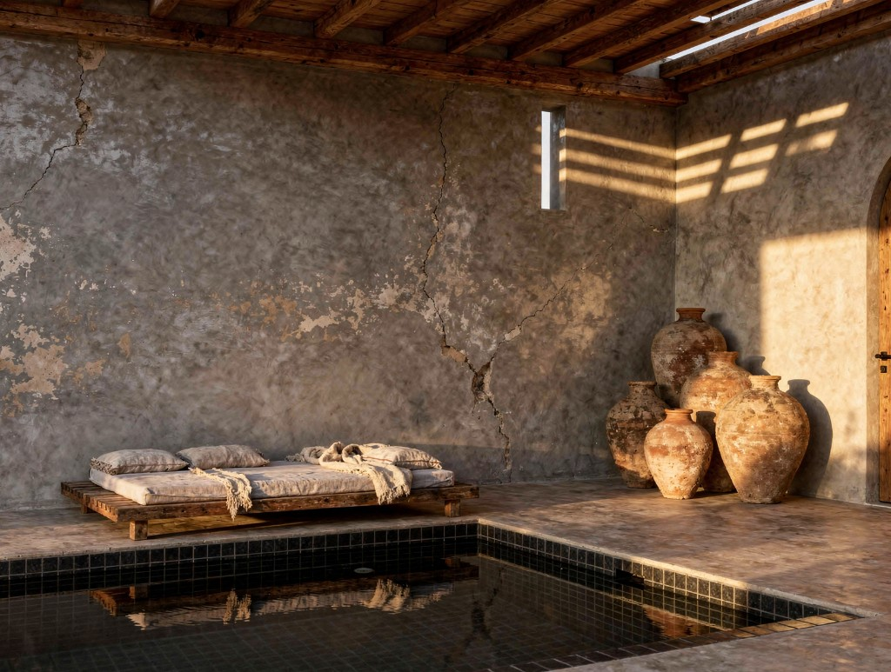

Term Sheet
Cadre contractuel
Les termes
Le pacte.
Sans ambiguïté.

Structure juridique
Véhicule
Acquisition SCI + SARL. Rebrand à l'ouverture.
Conditions préalables
VNA + Exequatur + Audit sismique. Non-négociables.
Capital et gouvernance
Parts souscrites
10 parts de 250 000€. Clôture conditionnelle à la confirmation du prêt bancaire (300 000€) et du GO SIYAHA (300 000€).
Stratégie de clôture
Prêt 300 000€ confirmé : 8 parts. GO SIYAHA confirmé : 9 parts. Sans financement externe : 10 parts, entièrement autofinancé.
Option double part
2 parts possibles (500 000€). Sortie naturelle : 1 riad + 1 remboursement cash garanti.
Véhicule investisseurs
Via SAS TB INVEST (France). Droits financiers et droit au riad identiques à une participation directe.
Répartition du capital
La répartition 70% investisseurs / 30% Leroy Brothers est définie contractuellement. Elle intègre la valeur de l'apport en nature de Leroy Brothers. Irrévocable pour la durée du pacte.
Quote-part par part
70% divisés entre les parts souscrites à la clôture. Indicatif : 8,75% (8 parts) / 7,78% (9 parts) / 7% (10 parts). Pré-consentement dilution réserve dans le pacte.
Leroy Brothers
200 000€ cash + 600 000€ nature - 30%
Veto artistique LB
Limité à l'identité artistique, standards de marque, matériaux et ADR plancher. Ne s'applique pas aux décisions opérationnelles, budgétaires ou à une cession.
Preferred return
10% par an (25 000€/part), prioritaire et cumulatif. Total : 200 000€/an (8 parts) à 250 000€/an (10 parts).
La garantie de passif vendeurs - 200 000€ en deux tranches
La garantie de passif de 200 000€ est un paiement d'acquisition différé effectué par TB Invest SAS aux vendeurs, entièrement distinct des opérations hôtelières. Ce n'est pas une charge d'exploitation et elle ne transite pas par le compte de résultat de l'hôtel. Elle est versée en deux tranches de 100 000€ : la première à 24 mois après l'acte définitif, la seconde à 48 mois, chacune sous condition qu'aucune réclamation couverte n'ait été notifiée contre les actifs acquis durant la période précédente. Les réclamations couvertes incluent les arriérés fiscaux, les passifs sociaux, les créanciers cachés et toute revendication de tiers sur les biens acquis. Cette structure offre aux investisseurs une fenêtre de protection de quatre ans contre les passifs antérieurs à l'acquisition, sans nécessiter de séquestre. Elle n'a aucune interaction avec votre retour préférentiel.
Fees TB Group
7,5% base + 15% incentive GOP. TB France vers SARL Maroc.
La sortie - Votre choix à l'année 5
Le riad ou le cash. Les deux sont garantis dans le pacte.
Entre l'année 5 et l'année 10, vos parts dans TB Invest SAS sont rachetées. Vous choisissez librement entre deux options garanties dans le pacte : le riad (meilleur rendement long terme) ou le remboursement cash de 250 000€. Notification requise avant la fin de l'année 4.
Fenêtre de sortie
Années 5 à 10. Option A : 1 riad par part. Option B : 250 000€ cash. Livraison en deux phases : 8 riads dès l'année 5, 2 en années 6-7.
Option A - Le riad
Bail emphytéotique 10 ans. Riad ou maison, 1-2 chambres, près de l'hôtel, piscine, jardins. 60 nuits/an. 37 800€/an revenus locatifs projetés. Transmissible aux héritiers. Construit sur les surplus hôtel, sans coût supplémentaire.
Option B - Remboursement cash
250 000€ garanti dans le pacte. Notification avant fin année 4. Rachat TB Invest SAS, droit français, paiement en euros.
Mécanisme de rachat
Rachat TB Invest SAS (droit français). SARL sans dette à la sortie, actif net 4,5M€ à 9M€. LTV 6 à 17%. Paiement en euros.
Limite annuelle
Maximum 3 rachats cash par année civile. Notification avant fin année 4. Au-delà, report l'année suivante selon ordre de notification.
Protection en cas de cession de l'hôtel
Clause de novation obligatoire. Tout acquéreur reprend les contrats riad comme condition de closing. Veto collectif des investisseurs sur toute vente sans reprise de leurs droits.
Revenus estimés (Option A)
37 800€/an (10 mois × 70% TO × 450€ ADR × 80% net × 50% part). Sur 10 ans : ~378 000€. Plus 60 nuits/an usage personnel (~300 000€ valeur).
Toile Blanche Group - Leroy Brothers - Mai 2026
Document confidentiel - non contractuel